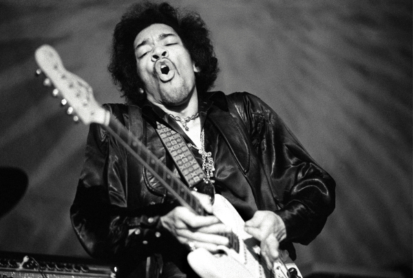

Jimi Hendrix
The greatest guitarist in the history of rock music

Jimi Hendrix live performance - Monterey Pop festival, 1967
Here is a timeline of Jimi Hendrix's life:
- 1942 - Born Johnny Allen Hendrix in Seattle, Washington, US
- 1958 - Acquires his first guitar
- 1961 - Enlists into the Army
- 1963 - Forms his first band called King Kasuals in Clarksville, Tennessee
- 1964 - Hendrix wins first prize in the Apollo Theater amateur contest
- 1965 - Hendrix signes his first recording contract with Juggy Murray at Sue Records and Copa Management
- 1966 - Moves to England
- 1967 - Achieves fame in the US after his performance at the Monterey Pop Festival
- 1968 - Rolling Stone declares him the Performer of the Year
- 1969 - Arrested in Canada charged with drug possession
- 1970 - Dies at the age of 27
“When the power of love overcomes the love of power the world will
know peace.”
Jimi Hendrix
For more information and history about this incredible musician visit Wikipedia